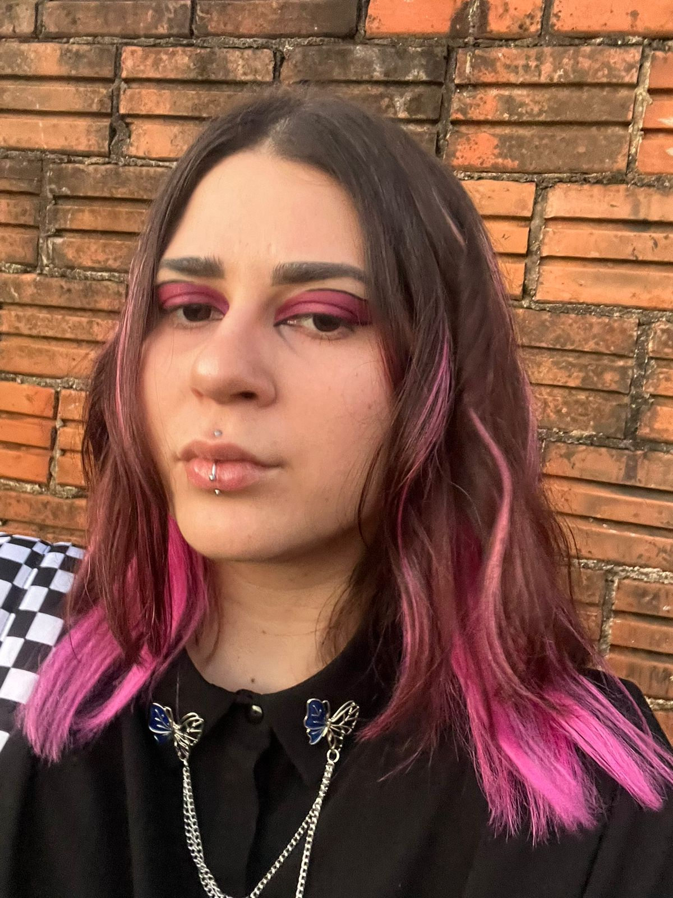

Age: 25 years old

I have always exercised the profession of Quality Analyst. Gradually, I've always been learning more and more about programming, but now having a great opportunity, i've decided to give more of my time to make it a reality. I am very interested in the programming area and all the years that I worked as a Quality Analyst will have a lot to add to me as a programmer.
Soft water in hard stone who warns is a friend